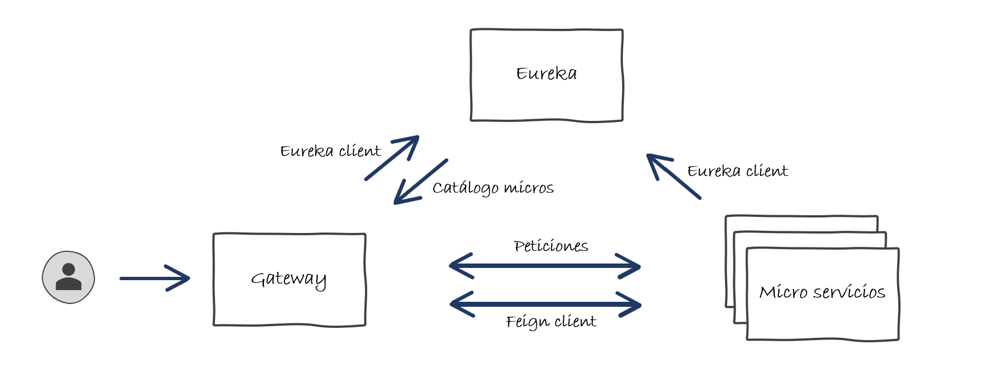

Introducción Micro Servicios - Spring Cloud
Que son los micro servicios?
Pues como su nombre indica, son servicios pequeñitos 
Aunque si nos vamos a una definición más técnica (según ChatGPT):
Los micro servicios son una arquitectura de software en la que una aplicación está compuesta por pequeños servicios independientes que se comunican entre sí a través de interfaces bien definidas. Cada servicio se enfoca en realizar una tarea específica dentro de la aplicación y se ejecuta de manera autónoma.
Cada micro servicio es responsable de un dominio del negocio y puede ser desarrollado, probado, implementado y escalado de manera independiente. Esto permite una mayor flexibilidad y agilidad en el desarrollo y la implementación de aplicaciones, ya que los cambios en un servicio no afectan a otros servicios.
Además, los micro servicios son escalables y resistentes a fallos, ya que si un servicio falla, los demás servicios pueden seguir funcionando. También permiten la utilización de diferentes tecnologías para cada servicio, lo que ayuda a optimizar el rendimiento y la eficiencia en la aplicación en general.
Spring Cloud
Existente multiples soluciones para implementar micro servicios, en nuestro caso vamos a utilizar la solución que nos ofrece Spring Framework y que está incluido dentro del módulo Spring Cloud.
Esta solución nace hace ya varios años como parte de la infraestructura de Netflix para dar solución a sus propias necesidades. Con el tiempo este código opensource ha sido adquirido por Spring Framework y se ha incluido dentro de su ecosistema, evolucionandolo con nuevas funcionalidades. Todo ello ha sido publicado bajo el módulo de Spring Cloud.
Contexto de la aplicación
Llegados a este punto, ¿qué es lo que vamos a hacer en los siguientes puntos?. Pues vamos a coger nuestra aplicación monolítica que ya tenemos implementada durante todo el tutorial, y vamos a proceder a trocearla e implementarla con una metodología de micro servicios.
Pero, además de trocear la aplicación en pequeños servicios, nos va a hacer falta una serie de servicios / utilidades para conectar todo el ecosistema. Nos hará falta una infraestructura.
Infraestructura
A diferencia de una aplicación monolítica, en un enfoque de micro servicios, ya no basta únicamente con la aplicación desplegada en su servidor, sino que serán necesarios varios actores que se responsabilizarán de darle consistencia al sistema, permitir la comunicación entre ellos, y ayudarán a solventar ciertos problemas que nos surgirán al trocear nuestras aplicaciones.
Las principales piezas que vamos a utilizar para la implementación de nuestra infraestructura, serán:
- Service Discovery / Eureka Server: Como vamos a tener varios servicios distribuidos por nuestra red, necesitaremos conocer donde está funcionando cada uno de ellos, su IP, su puerto e incluso sus métricas de acceso (localización, zona, estado de carga, etc.). Vamos a necesitar un
Service Discoveryque no es más que un catálogo de todos los servicios que componen el ecosistema al cual cada servicio debe informar de forma proactiva, de su localización y disponibilidad. - Client-side Service Discovery / Eureka Client: Como hemos mencionado en el punto anterior, todos los servicios del ecosistema (incluidos nuestros micro servicios) deben conectarse con el
Service Discoverye informar periódicamente a este catálogo de su estado y sus métricas para que en caso de perdida de servicio, el resto de elementos lo sepan y puedan tomar decisiones al respecto. También nos servirá para que cada elemento pueda guardar en local una caché del catálogo publicado, que se irá refrescando cada vez que lance unhealth check. - Edge Server / Gateway / Proxy: Se trata de un servicio que hará de intermediario entre el mundo exterior y el mundo de microservicios. Además permitirá hacer redirección y balanceo entre todos los elementos registrados en el
Service Discovery. Es altamente configurable (rutas, redirecciones, carga, etc.) y es una pieza fundamental para unificar todas las llamadas en un único punto del ecosistema. - Feign Client: Esta utilidad que provee directamente Spring Cloud nos permite comunicarnos entre los diferentes micro servicios de Spring, de una forma muy sencilla y sin tener que estar gestionando llamadas API Rest.
Diagrama de la arquitectura
Con las piezas identificadas anteriormente y con el Contexto de la aplicación en mente, lo que vamos a hacer en los siguientes puntos es trocear el sistema y generar la siguiente arquitectura:

Ya deberíamos tener claros los conceptos y los actores que compondrán nuestro sistema, así que, allá vamos!!!